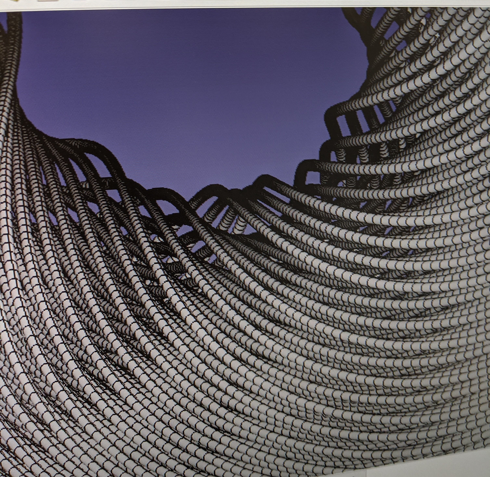

The original video.
Efficient maximum sums sort algorithm
The video above is a spin-off from my PhD: While I was trying to maximize a sum of k numbers picked out of a given list of n real numbers, I came across the following problem:
How to find the highest m sums formed by picking k numbers out of a given list of n numbers, in a computationally efficient manner?Let's break that question down with the help of an example.
Let's say you have a list of n=5 numbers, [0.1, 0.3, 5.5, 4.2, 8],
And you'd like to find the highest m=2 sums formed by picking out k=3 numbers from the list above.
For such a small number n, it's easy to see the solution:
highest sum = sum(8, 5.5, 4.2) = 17.1
2nd highest sum = sum(8, 5.5, 0.3) = 13.8
However, you might not be so sure about how to find the 3rd highest sum. Now, if you were a careless programmer, when you're asked to find the 3rd highest sum, you might just say "I'll use my trusty computer™ to check every single combination of 5 choose 3 for me, and sort those 53C = 10 sums obtained, then pick out the 3rd highest sum.". But this method is definitely not a scalable one: if your list has n=60 numbers, and you're asked to find the top m=20 sums by picking k=10 numbers out, you'd end up spending 6010C = 75 billion calculations just to discard most of it, leaving only the top 20 results.
So instead I have devised the following method:
- Sort the list into a descending order. [8, 5.5, 4.2, 0.3, 0.1]
- The highest sum must be formed by picking the leftmost 3 out of the 5 numbers in the list.
- The second highest sum must be formed by picking the 1st, 2nd and 4th numbers out of the 5 numbers in the list.
Step 2: Picking the leftmost 3 out of the 5 elements can be written as
11100Step 3: Picking the 1st, 2nd and 4th numbers out of the 5 numbers can be represented as
11010Step 4 is to find the 3rd highest sum: this would be either
11001 OR 10110Step 5 is to deploy can deploy a sorting algorithm to find which of these two is higher: the sum obtained by the choice 11001, or that obtained by the choice 10110.
While formulating this selection process in my head, I was also trying to pick a way to visualize this process. And this is what I came up with: Represent each choice as a node. So starting with 11100 at the origin,
- we can get to 11010 by moving the last "1"(connected by an edge that points down and right, since we're moving the "1" on the right),
- we can get from 11010 to 11001 by moving the right "1" again (connected by an edge that points down and right, since we're moving the "1" on the right),
- we can get from 11010 to 10110 by moving the middle "1" (connected by an edge that points downwards only, since we're moving the centre "1"),
- ... etc.
And if we reflect the right half of the graph to the left, and remove the text labels and legend, we can get back the 9 choose 6 video above.
And just for the fun of it, we can extend that to different integers of n and k, to see how it looks: Now, there is a caveat when applying the same rules to k>3: two different nodes may overlap. But this doesn't stop us from getting the very nice pictures above.
Fourier transform a video
Some years ago, while learning about Fourier transform, I was enamoured of the fact that every curve has a "dual".

Therefore, when I saw the Arctic Monkey's music video "Do I Wanna Know", I trialled my Python skills with the challenge of Fourier transforming that video.
Play the following two videos simultaneously and you will see what I mean.
The fourier transformed version of the video.
Each frame of the video is obtained by taking the fourier transform of the curve of the original video's frame, then removing the imaginary part. The left side of the frame corresponds to low frequencies (long wiggles) and the right side of the frame corresponds to high frequencies (short wiggles).
It follows the same art style, speed and layout.
I stopped before a second line started to appear on the original video. Including the second line would have made the project too complex to manage using the python skills I had at the time.
Wire distribution modelling using nonconformal mapping and FEM
For various reasons, my friend needed to know the precise distribution of wires inside a cable.
This cable consists of 6 bundle of wires twisted together around a central column. Each bundle consists of 416 strands of wires, and within each bundle these 416 wires are wrapped among themselves in a helical fashion as well.
In the video above, the coloured lines denote the sheaths wrapping around each bundle. The dot traces out the expected path of a single strand of wire within the cross-section of the cable as we move up the cable.
The problem was, a circular rotation pattern won't work for all 416 strands, as some will collide with the sheath while others will leave a lot of empty spaces near the corners of the sheath.
So the first attempt to even out the distribution of wires was to start with a rotating circle, tessellated with 416 smaller circles, and then apply elliptical grid mapping to transform it into a square. (This is not the only way to "square a circle". Other types of circle-to-square transformations can be found here.)

The square can then be mapped into the shape of the sheath (called a sextant).
This is done using an area-preserving transformation, to minimize the amount of distortion to the density distribution of wires.
This gives the following expected distribution of wires as we move up the cable.
But this is still quite far from our intuitive expectation of the distribution of wires inside the cable: It is still empty near the corners and too tightly packed near the centre of each bundle.
So my next idea was to pretend the centre of each wire was a charged particle, repelling them from each other.
To simplify the process, we consider the sextants to be identical copies of each other so that we can focus on only a single sextant.

Using a technique called overrelaxation to speed up the simulation, the distributions of the centre of the wires at each "slice" of the bundle were obtained.
But if we scan across the bundle, we will notice something wrong:
 The wires "jumps" and swap location with each other when we scan across the bundle!
The wires "jumps" and swap location with each other when we scan across the bundle!
This is because we haven't implemented any restriction on how close the wire in the previous slice should be to the next slice. Therefore to achieve the lowest energy configuration, the distribution of wires in one slice may be very different from that of a neighbouring slice.
To fix this issue, we can extend the repulsive force to neighbouring slices as well. Let's see how that turns out:

Well, that ... wasn't supposed to happen. Everything went out of bounds. The force was too strong with this one.
The repulsive force made everything go out of bounds.
Reducing the repulsive force would only make each simulation more time consuming to run. But we tried it, and it still failed to converge.
So we removed the repulsive force and added an attractive force, pulling the centre of wires in neighbouring slices together. Still, no luck. Run it for long enough and the same divergence happened.
After numerous time-consuming experiments, and days of pouring over the data, I found out the source of the problem:
We thought the repulsive force should get exponentially stronger as we approach the centre.
Instead, a more mellow force profile (seen below) will lead to convergence more quickly:
 (y-axis: repulsive force strength; x-axis: distance to wire repelling it.)
(y-axis: repulsive force strength; x-axis: distance to wire repelling it.)
The original profile (left) gives a solution with a very small region of stability: when the wires are far apart, they will repel each other and stay relatively motionless; but if any wire wanders close enough to another wire, it will be launched away from the latter with excessive force, barrelling into other wires, and causing a chain reaction that leads to chaos.
Whereas the newer force profile (right) has no such problem.
This gives rise to the following result:
Another interesting feature about my simulation is that it is memoryless, i.e. the wires "forget" the momentum it has gathered in the previous steps. Therefore it behaves like particles pushing on each other in a damping medium, like a viscous fluid.
What I'm doing in this model is basically an FEM simulation (Finite Element Modelling), but at a much faster speed, and a much lower computational cost, leveraging on NumPy's array operation abilities and branchless programming.
And if you're wondering how does the entire model look in 3D ...
And here's a static screenshot of the same bundle of 417 wires in higher resolution:
Well, all I can say is, the wires are too dense for us to see clearly what's going on in 3D. But at least we can see their outlines follows a spiral pattern.
Machine learning classification of products
Another friend of mine needed to manually classify up to several tens of thousands of products into the correct product categories, using only a simplified name given by the supplying company.
He is given a list of product ID's with their shortened names and descriptions, and is told to fit them into around ≈100 different predetermined categories.
| Product ID | Name | Description | required category (has to be manually inputted) |
|---|---|---|---|
| 1445245 | Savage Rainbow sequin festival wings | Body Jewellery | Accessories |
| 1418947 | Yoki Straw Circle Cross Body Bag | nan | Bags ( Days bags and Backpacks) |
| 1408225 | Sass & Belle swan salt & pepper shaker set | Living | Bar and Kitchen Utensils |
| 1492224 | Miss Patisserie Mango Bath Slab | Beauty Body | Bath Fizzers and Bombs |
| 1478389 | Hollister braided leather belt | nan | Belts |
| 1459198 | Monki scoop neck bikini top in black | Swimwear | Bikini |
| 1407710 | ASOS DESIGN white pinstripe suit blazer | nan | Blazer |
| 1356938 | Laura Mercier Natural Cheek Colour Blush - Chai | Beauty Base | Blusher |
The rightmost column is empty when the data is given.
The current practice is to manually label some of them, and then use fuzzy matching to match the rest. However, fuzzy matching has a spectacularly poor track record, reaching classification accuracy of ... drum roll please... a whopping 50%.
I suggested that perhaps fuzzy matching is an incorrect solution to the problem, and that he should instead use machine learning, which will have a much better effect as it can take advantage of existing information.
The machine learning algorithm extracts the name and description of the product, break it down to individual words, and learn the correlation between individual words and each category.
For example, the word "blazer" may appear in only a few products, all of which are categorized as "Blazer". Therefore the machine-learning model will correlate the word "blazer" strongly with the category "Blazer".
However, the word "short" may also appear in products that aren't wearable shorts (e.g. "short dress"). Therefore the word "short", on its own, should not be strongly correlated with the category "shorts".
4 different machine learning techniques were tested: SVM, logistic regression, random forest, and naïve Bayes. In the end, (linear) SVM was chosen as it came out on top with the highest accuracy, correctly predicting the category of the product 98% of the time. It also has the advantage of being the fastest among all of them and has no extraneous parameters to be tuned to optimize its performance: it works straight out of the box.
You can see a demonstration of its ability below. After being trained on 7211 correctly labelled product entries, the model was given the following unlabelled data:
| Product ID | Name | Description |
|---|---|---|
| 1482522 | Bershka slim fit jersey shorts in blue stripe | Shorts |
| 1373686 | Jeepers Peepers diamond sunglasses with blue lens | Mens |
| 1407648 | Moss Copenhagen button down maxi smock dress in vintage floral | Dresses - Day |
| 1460135 | ASOS DESIGN Plus fluro denim jacket in green | nan |
| 1449771 | Pour Moi Hot Spots ditsy padded underwired bikini top in black multi | Fuller Bust Bikinis |
| 1460208 | New Look Petite stripe linen crop trouser in cream pattern | Casual Bottoms |
| 1443942 | Boohoo crinkle high waist bikini bottoms with frill in khaki | Swimwear |
| 1465396 | Reclaimed Vintage inspired t-shirt with crystal print | Jersey Tops |
Since it has learned the correlation between words in the name and description and the categories, it can categorize each element in the table above, assigning it a possible category and the confidence score for it to be categorized as that category.
| Product ID | Most likely category | Confidence score | second most likely category | Confidence score |
|---|---|---|---|---|
| 1482522 | Shorts | 3.888540496683325 | Swimwear | -0.791359085767619 |
| 1373686 | Sunglasses | 1.3341932961661953 | Leggins / Jeggings | -0.9093674148743226 |
| 1407648 | Dresses | 2.1543932602501075 | Skin Care with Glass | -1.0688194890538223 |
| 1460135 | Coats / Jackets | 1.249923199928676 | Jewellery | -0.9958331476526012 |
| 1449771 | Bikini | 1.0576986345236594 | Skin Care with Glass | -1.0439104987337329 |
| 1460208 | Trousers (casual) / Jeans | 0.5250788065435212 | Pyjamas | -0.7996031592490555 |
| 1443942 | Bikini | 1.5026838844402144 | Swimwear | -0.5166287623573032 |
| 1465396 | T-shirts / Tops / Polos | 1.5382531417881091 | One Piece / Jumpsuit / Body Suit | -1.0075232111688528 |
This is great ... we spend months trying to manually label the data ... and this program takes only [10 seconds]!